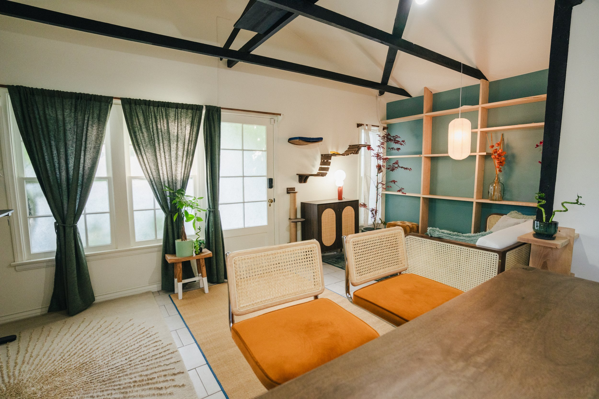
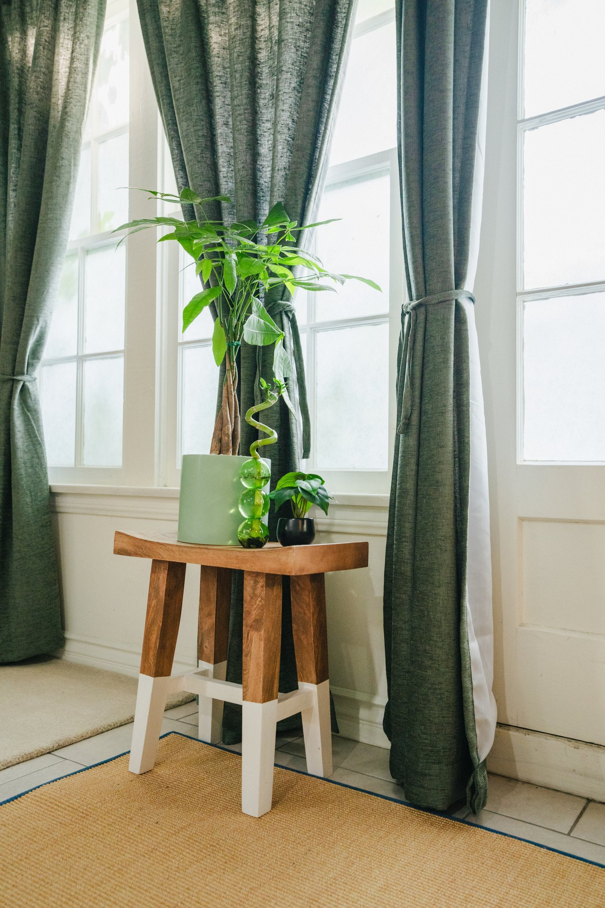
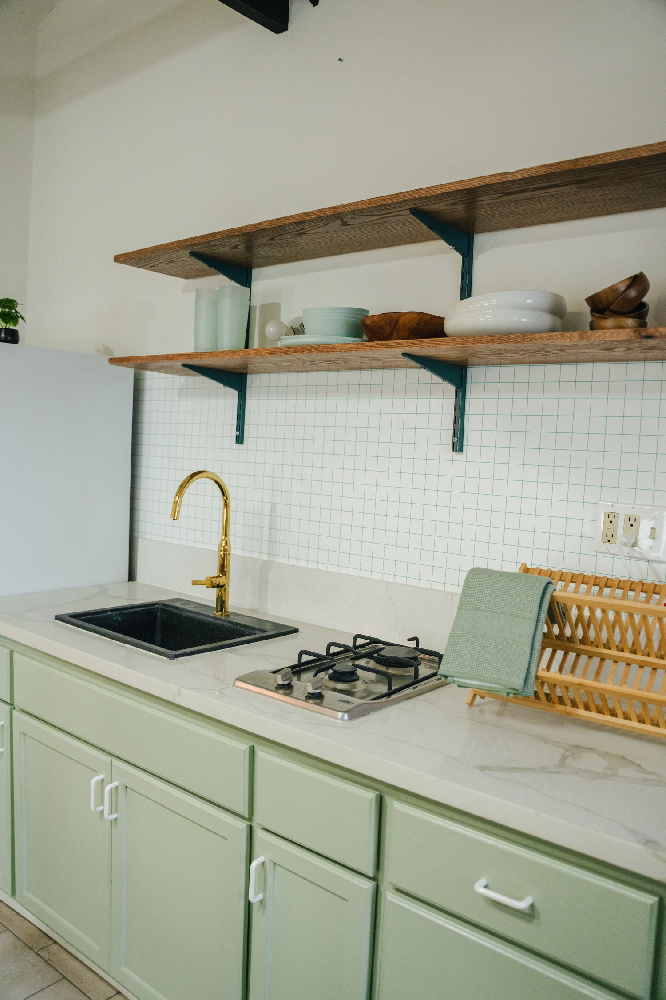
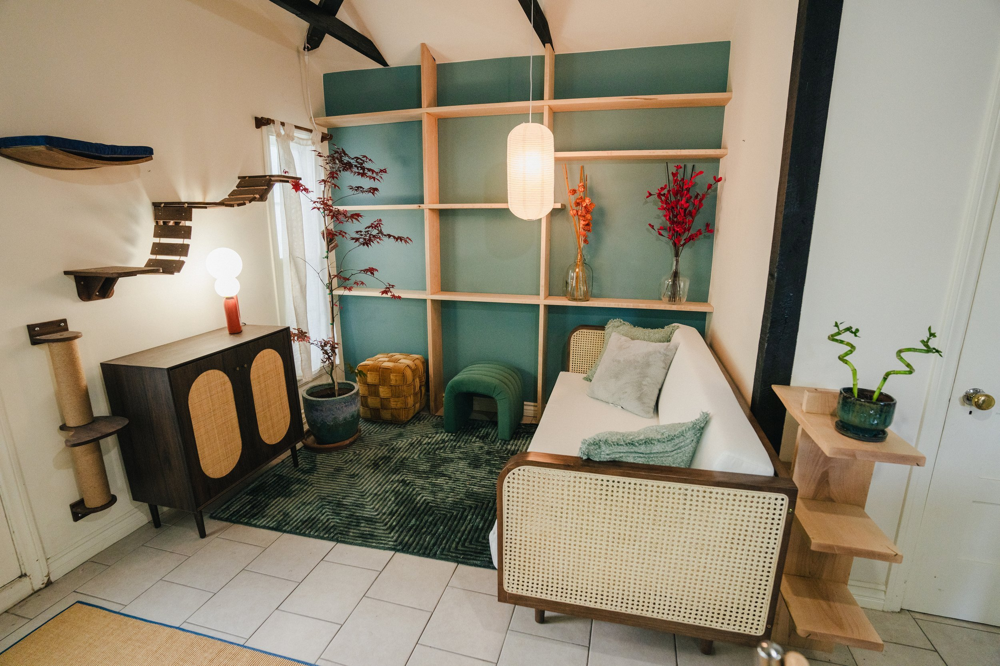

ludwig stream room
When designing Ludwig’s Stream Room, we sought to create a space that blends functionality, simplicity, and personal style—drawing inspiration from Japandi. The primary approach was to provide a place with more display opportunities for his belongings and fan gifts. With over 9 million followers on YouTube and Twitch, Ludwig is one of the most influential content creators, and we aimed to craft a room that enhanced his streaming experience while staying true to his personal style and passions
ClientLudwig
Year2024RoleSpatial DesignInterior DesignArt DirectionContractor Manager
designed for comfort & personal expression
japandi-inspired aesthetic
The varying shades of green enhanced the sense of calm and vitality, transforming the stream room into a rejuvenating environment. Other wabi-sabi elements, such as ceramic lighting, unevenly glazed pottery, hanging paper lanterns, and a six-foot Japanese maple tree, were thoughtfully incorporated to infuse the room with natural beauty and authentic charm.
a natural blend of materials
The mix of linen curtains, woven carpet, and rattan accents brought texture and warmth to the room. We used a variety of wood tones across the custom shelving, for a more organic, lived-in feel.



